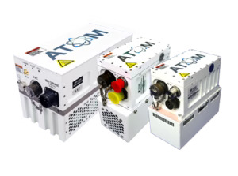
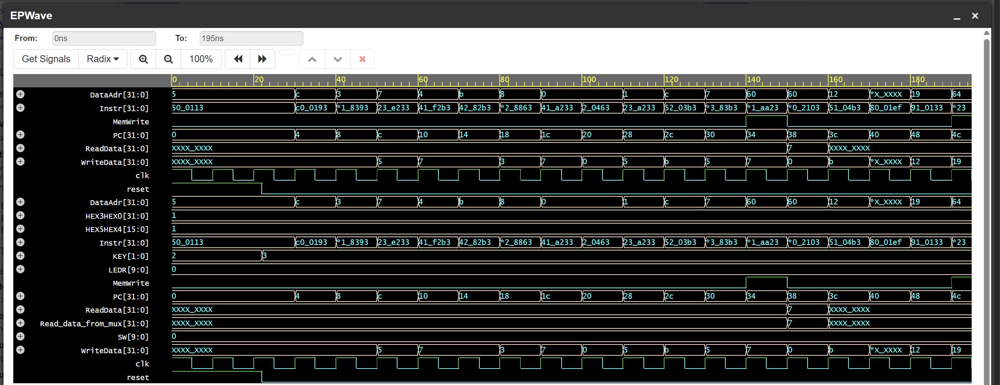
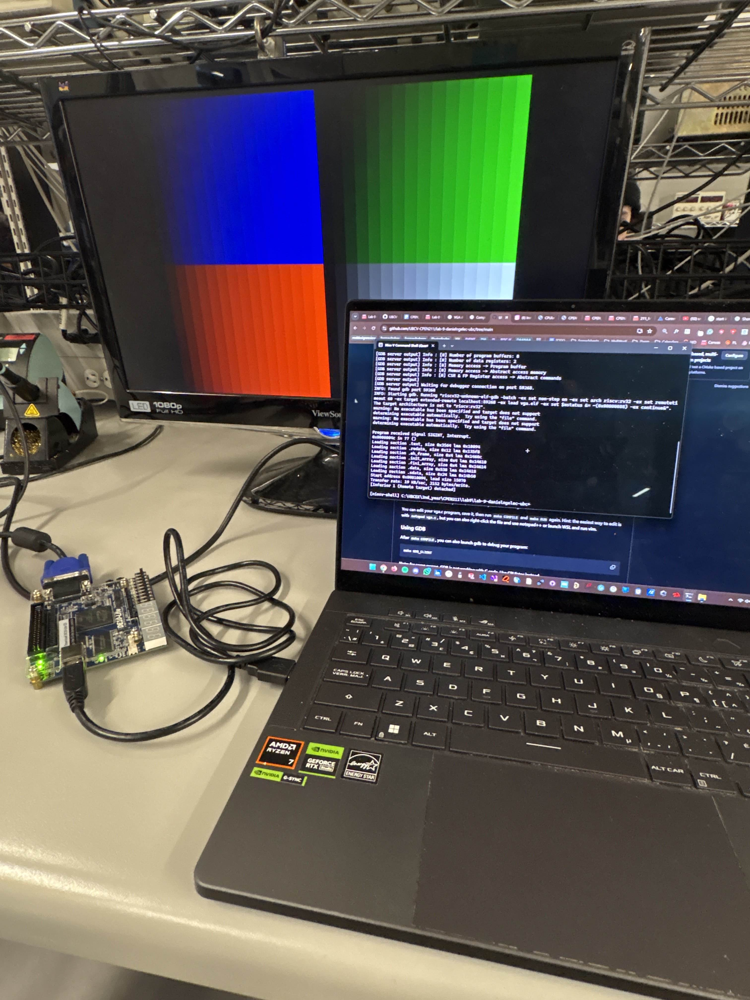
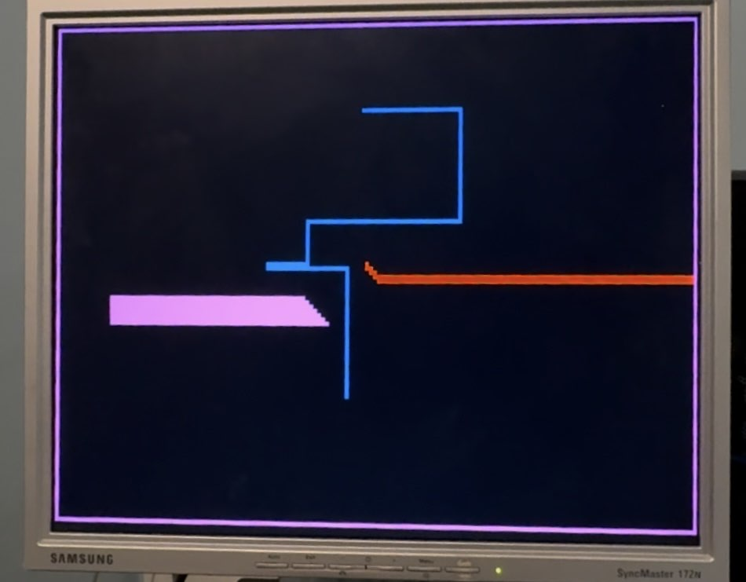
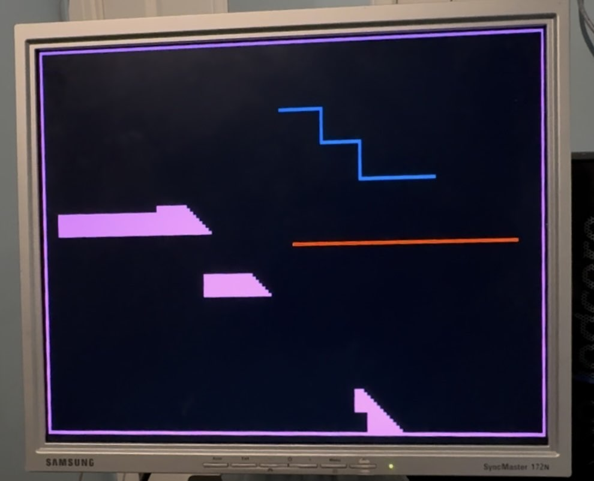

Experience & Projects
Hardware Intern
Norsat International
RF characterization and hardware testing for Norsat satellite communication systems.
Click to view details
Hardware Intern
Norsat InternationalProject Images

- Performed gain, power saturation, 1-dB compression point, spurious emissions, third-order intermodulation distortion, and noise figure characterization on 20+ 40W, 50W, and 80W Ku-Band Block-Up Converters using Keysight PNA-X Vector Network Analyzers, Signal Analyzers, RF jigs, and multimeters to verify hardware parameters.
- Performed RF power calibration by sweeping DAC codes controlling voltage-variable attenuation and PA bias while monitoring output power and stability.
- Assembled and reworked BUCs and LNBs at the PCB and PCBA levels, performing fine-pitch SMT and THT soldering and microscopic inspection on MMIC chips to meet production quality standards.
- Verified and troubleshooted SSPA boards by conducting continuity tests and cross-referencing schematics to identify and rectify DC bias instability and RF path discontinuities, ensuring 100% yield for high-power MMIC stages.
Laser Timing Gates (Ongoing)
Formula UBC Racing
End-to-end development of 650 nm laser gate receivers with ESP32-S3 MCUs.
Click to view details
Laser Timing Gates (Ongoing)
Formula UBC Racing- Leading the full design cycle of a 650 nm laser gate receiver in Altium with two MechE students to develop optomechanical shrouding coupled with a custom analog front end (photodiode+transimpedance amplifier (TIA)+Schmitt trigger) to maintain 3.3V CMOS logic and 2.4GHz communication between master-slave ESP32-S3 MCUs.
- Characterizing baseline photodiode thermal dark current and TIA voltage noise to calibrate an adjustable hysteresis threshold via potentiometer, targeting a 20dB Signal-to-Noise Ratio (SNR) and a Bit Error Rate (BER) of < 10⁻⁷ to ensure reliable high-speed data integrity between MCUs.
RISC-V Single Cycle CPU
Academic Project
Single-cycle RISC-V subset ISA processor implemented on Altera DE10-Lite FPGA with assertion-based verification.
Click to view details
RISC-V Single Cycle CPU
Academic ProjectProject Images


- Architected and implemented a Single-cycle RISC-V processor in SystemVerilog with memory-mapped I/O onto Altera's DE10-Lite with functioning register file, ALU, and control unit, supporting a 10-instruction subset of the RISC-V ISA.
- Wrote a self-checking non-synthesizable testbench with assertion-based verification to verify instruction-level correctness and used EPWave & Questa to trace signals through the synchronous timing datapath.
Tron Light Cycle Game
Academic Project
Embedded C & FPGA MMIO. Tron Light Cycle Game featuring custom VGA drivers and interrupt-driven controls.
Click to view details
Tron Light Cycle Game
Academic ProjectSystem Architecture



- Developed a custom VGA graphics driver using Memory-Mapped I/O (MMIO) to manage frame buffers, rendering dynamic light traces and a gameplay perimeter while maintaining high-speed pixel updates via bit-shifted coordinate mapping.
- Implemented an interrupt-driven control scheme for human input, utilizing an Interrupt Service Routine (ISR) to handle asynchronous pushbutton events, significantly reducing input latency compared to traditional polling.
- Engineered an autonomous robot opponent with predictive collision logic; the algorithm performs real-time memory reads of the VGA buffer to scan for obstacles and dynamically updates movement vectors to avoid crashes .
- Integrated hardware-level peripherals including an active-high Seven-Segment LUT for real-time score tracking and JTAG UART for system status monitoring.
Reflow Oven Controller (Ongoing)
Academic Project
Closed-loop thermal control system using thermocouple feedback and PWM power regulation.
Click to view details
Reflow Oven Controller (Ongoing)
Academic Project- ⏳Work in progress...check in mid February!
Autonomous Field-Following Robot
Academic Project
Mobile robot engineered to detect and follow magnetic field lines with integrated collision avoidance.
Click to view details
Autonomous Field-Following Robot
Academic Project- ⏳Work in progress...check in early April!
Alarm Clock
Academic Project
High-order active filter system designed for specific frequency response and noise rejection.
Click to view details
Alarm Clock
Academic Project- ⏳Work in progress: check in a few weeks!